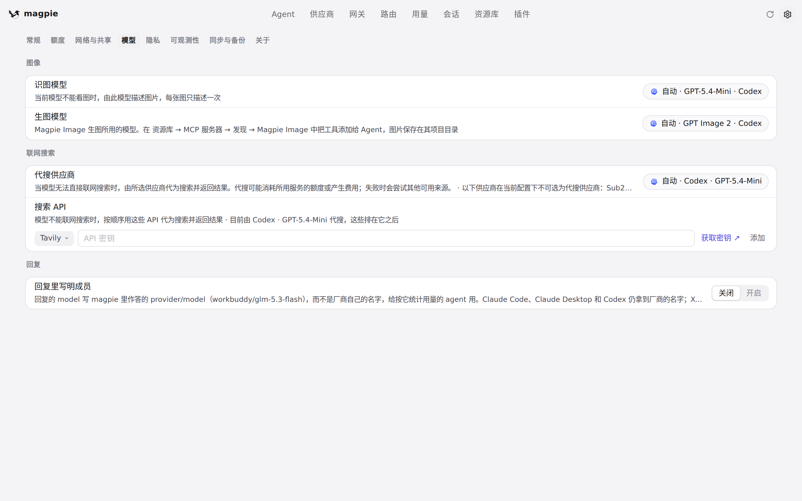

#1073 界面预览
commit 70a7723 · 回到 PR · 这次改动把设置里三项模型选择的保存校验从 provider.Resolve（已知供应商下任何拼写都接受）换成各自挑选列表的校验：图像识别模型和 Codex 会话标题模型按 provider.Served，图像生成模型按 provider.Drawers（imageGens）。界面上没有新增元素，变化在于用户在设置里保存一个已经不被服务的模型时会被拒绝并保留原值。
红线是鼠标走过的轨迹，红色圆环是一次点击；底部文字是这一步在做什么。空格暂停，← → 逐段查看。
 Codex 会话标题的模型选择 · 「Codex 会话标题」的模型选择项
Codex 会话标题的模型选择 · 「Codex 会话标题」的模型选择项
 Codex 会话标题的模型选择 · 打开后的候选模型菜单
Codex 会话标题的模型选择 · 打开后的候选模型菜单
 模型标签下的模型选择 · 「模型」标签：图像识别与图像生成的模型选择在这里
模型标签下的模型选择 · 「模型」标签：图像识别与图像生成的模型选择在这里

模型标签下的模型选择 · 再往下看到的模型选择项